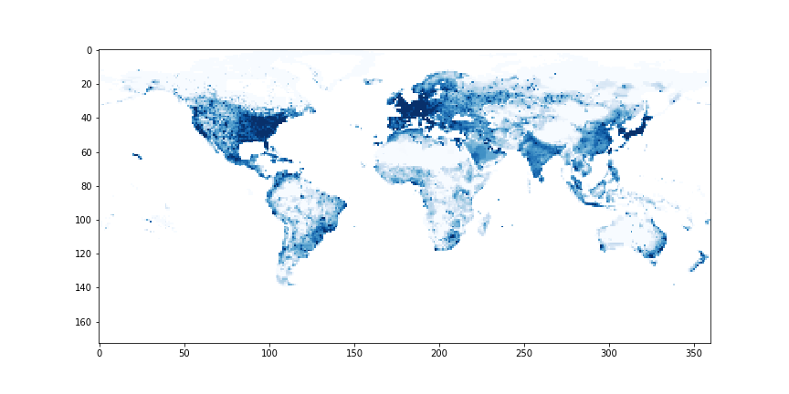
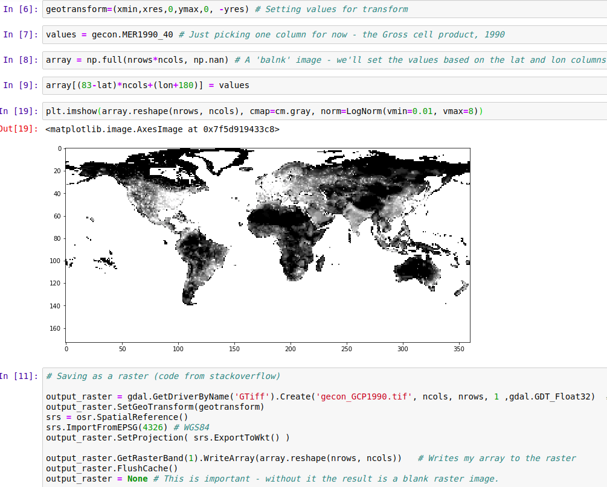
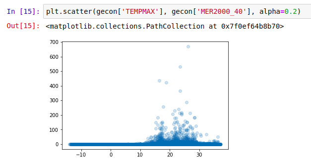
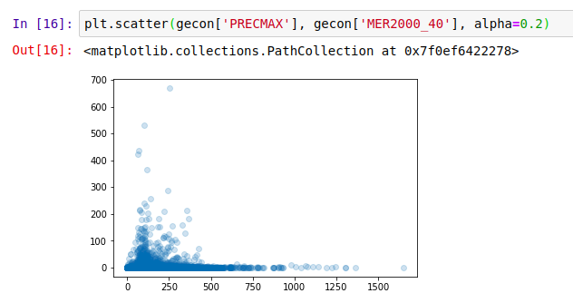
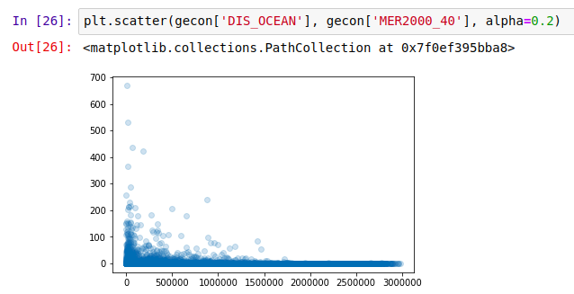
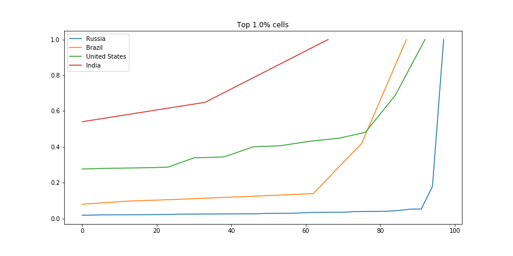

Data Glimpse: Visualizing Economic Activity with the G-Econ Project data
This is the first ‘data glimpse’ - a short exploration of an existing dataset, with code and examples showing some of the ways the data can be used. For today’s glimpse, I’ll be playing with the ‘G-Econ’ dataset [1], as recommended by

Economic Activity by Grid Cell - G-Econ data for 1990
Loading the data
The data is shared as a Microsoft Excel worksheet [2]. There are 27,446 rows, and it’s a little overwhelming visually. Spreadsheets aren’t my forte, so my first step was to load the data into a Pandas DataFrame in a Jupyter notebook (available here for anyone who wants to follow along). With the data ready, I set out on the most obvious task: showing the data as a map. A few minutes of StackOverflow later, we have a visual and a GeoTiff file that can be opened in mapping software such as QGIS:

Asking questions
Because the data is aggregated by location (as opposed to population), it can answer some interesting questions. How does economic output vary with temperature or rainfall? How ‘centralized’ is industry in different regions? What’s the deal with all that $$$ hugging the coastlines? Let’s dig in.
Environmental Factors
First up, the effect of temperature:

Not much gets done where it’s cold, it seems
What about rainfall?

Economic Activity (2000) vs max precipitation (mm rainfall)
And finally, distance to the ocean:

Coasts are the place to be?
It appears that the most productive places are those where people like to be: accessible, not too hot, not too dry but not constantly drenched… A Goldilocks zone for human activity. The data already contains these environmental variables - I highly encourage you to try your own plots, or to read up the more thorough analyses in [1].
Comparing Countries
There are many ways we could compare countries. A bar plot of average economic activity per grid cell, perhaps, or comparison between the most productive single grid cell in each country. I was interested to see which countries had the most spread. The GIF below shows this dramatically: the top few cells in Russia are responsible for a huge chunk of the economic activity, while India has much more of a spread:

Scaled fraction of the total economic activity in four countries.
For the code, see the GitHub repository associated with this post.
Conclusions
I hope you’ve enjoyed this quick, informal look at a fun dataset. I’m planning on doing more of these ‘Data Glimpse’ posts, since they take less time than a full write-up. The trade-off is that quality is lower, since I’m not going to invest time into perfectly labelled axes, long explanations or extra figures. Let me know what you think about this plan!
References:
[1] - Nordhaus, W., Azam, Q., Corderi, D., Hood, K., Victor, N.M., Mohammed, M., Miltner, A. and Weiss, J., 2006. The G-Econ database on gridded output: Methods and data. Yale University, New Haven, 6.References:
[2] - https://gecon.yale.edu/data-and-documentation-g-econ-project (accessed June 2019)